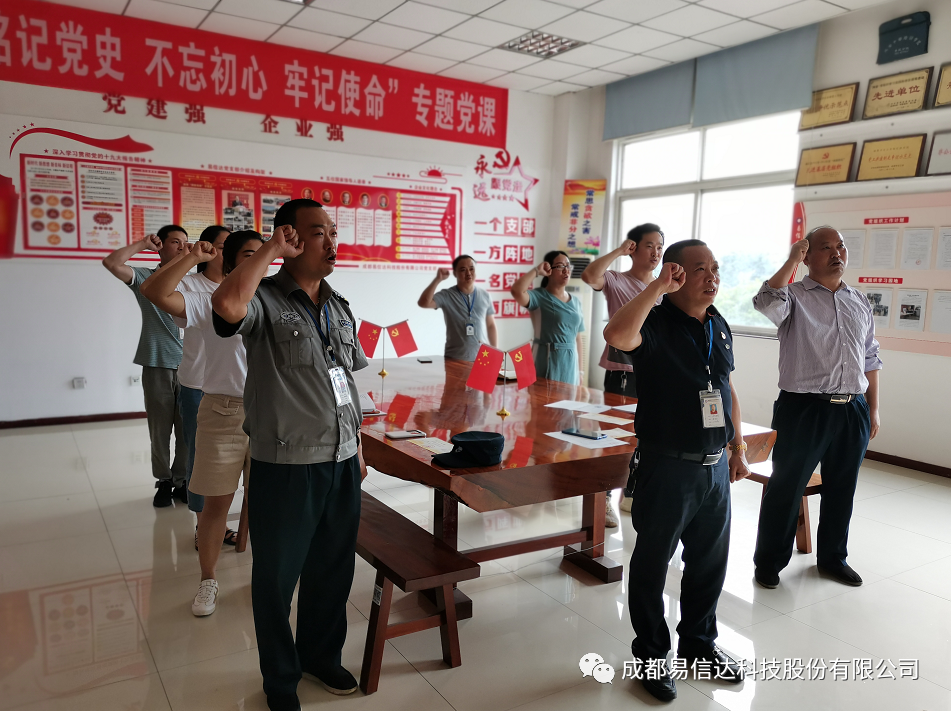
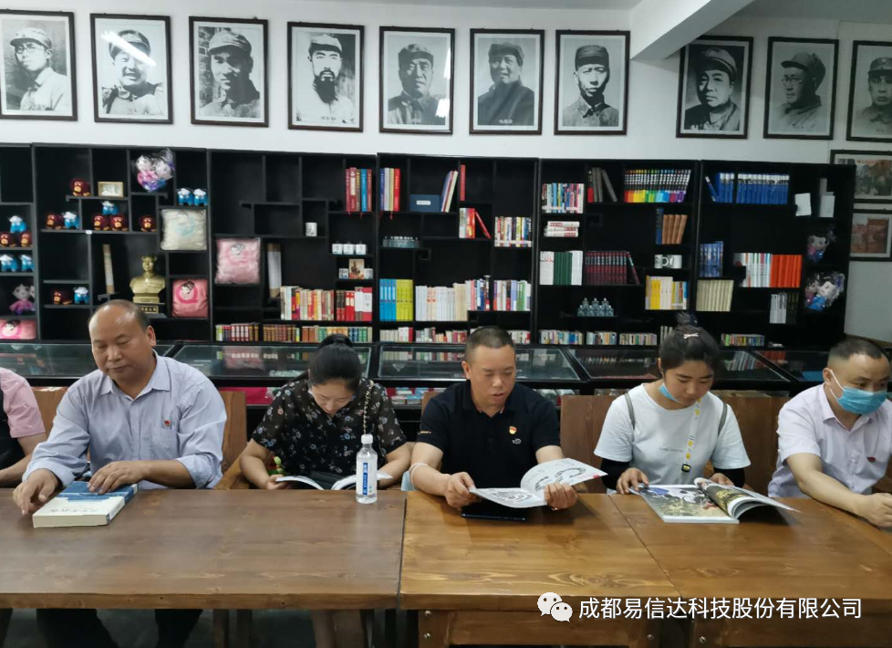
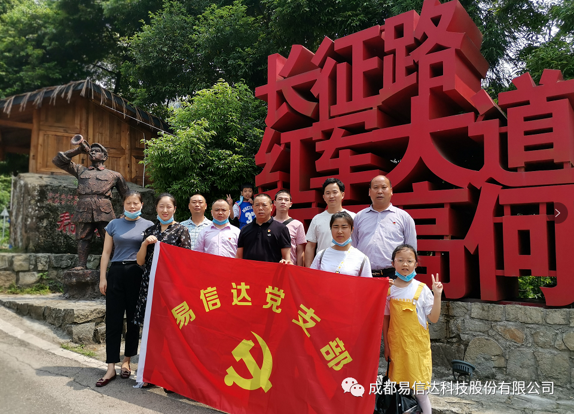

发布时间：2020/07/02 浏览次数：3697
七一建党节即将到来，为纪念中国共产党建党99周年，弘扬党的优良传统，回顾党的历程，积极响应上级组织文件要求，成都易信达科技股份有限公司支部委员会于2020年6月19日、20日组织公司全体党员同志过了一次有意义的组织生活。 2020年6月19日下午17:00时，全体党员同志在党员活动中心召开会议，在党支部副书记张伟忠同志的带领下重温了入党誓词，进一步增强党员同志的责任感、使命感和荣誉感，坚定信念。增强政治仪式感，进一步强化党性教育。 2020年6月20日一早，全体党员从公司出发前往邛崃市天台山红军长征纪念馆参观学习，天台山红军长征纪念馆系中国工农红军四方面军建立的第四苏维埃旧址、现为成都市红军长征经过的地方。“四川省爱国主义教育基地”，该馆保留了当时红军遗留下来的大量生活用品和枪械等。山门外建有红军厅，刊立着红军遗留下来的石刻标语。 长征已成为中华民族意志与品格的注脚和前赴后继追求光明与理想的象征，长征精神更是革命先辈为后人留下的最宝贵的精神财富，艰苦奋斗、勇往直前、团结协作的长征精神紧扣着时代脉搏一起律动，将永远奏响出时代的最强音。 通过此次活动的开展，充分调动了党员同志的积极性，教育引领党员志践行初心使命，在自己的本职工作中能发挥党员先锋模范作用。
